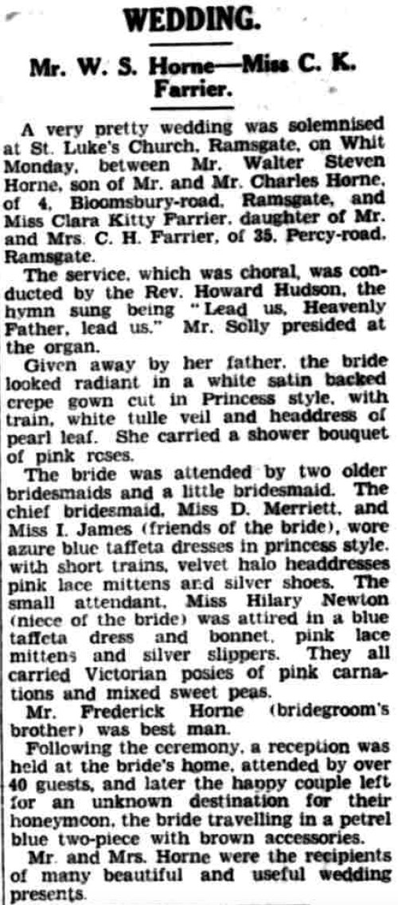
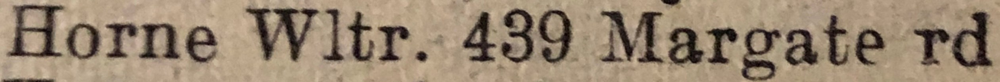
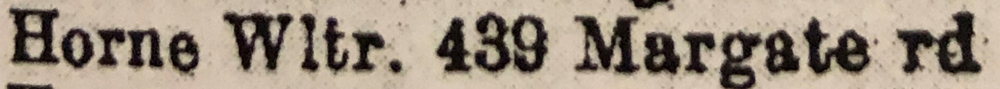
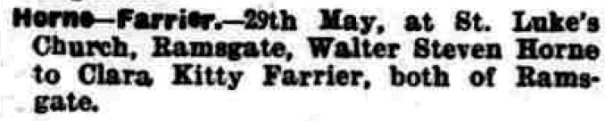
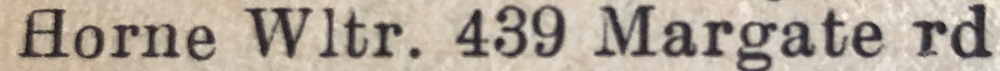
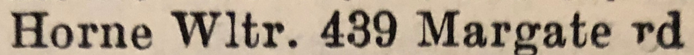
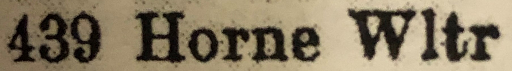
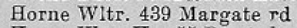
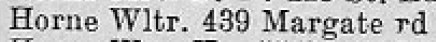
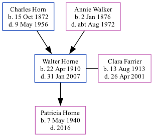

Walter Stephen Horne 1910 - 2007
[ Home ] | [ Calendar ] | [ Surnames Index ] | [ Family History ]A house painter and the son of Charles Horn (a fisherman) and Annie Walker, Walter Horne, the second cousin twice-removed on the father's side of Nigel Horne, was born in Ramsgate, Kent, England on Apr 22, 19101,2,3, was baptized in St Lawrence, Thanet, Kent, England on Jun 12, 1912 and married Clara Farrier (a dress maker coathand with whom he had 1 child, Patricia May) on St Luke's Church, Hollicondane Road in Ramsgate on May 29, 19395.
Walter spent all of his life in Kent, England. Throughout his life, he lived in several places around the county: at 67 Addington Street in Ramsgate on Apr 2, 191113; on 4 Bloomsbury Road in Ramsgate on Jun 19, 192114; and on 439 Margate Road in Ramsgate on Sep 29, 19391, in 195110, in 19539, in 195512, in 19638, in 196511, in 19717 and in 19746.
He died on Jan 31, 2007 in Ramsgate4.
Parents
- Charles was born on Oct 15, 1872
- Annie Elizabeth was born on Jan 2, 1876
Children
- Patricia May was born on May 7, 1940
Citations
- 1939 Register - Findmypast (was the head of the household)
- England & Wales births 1837-2006 - Findmypast
- Kent Baptisms - Findmypast
- England & Wales Deaths 2007-2021 - Findmypast
- England & Wales Marriages 1837-2005 - Findmypast
- 1974 Kelly's Thanet Directory
- 1971 Kelly's Thanet Directory
- 1963 Kelly's Thanet Directory
- 1953 Kelly's Thanet Directory
- 1951 Kelly's Thanet Directory
- 1965 Kelly's Thanet Directory
- 1955 Kelly's Thanet Directory
- 1911 Census for England & Wales - Findmypast (was age 1 and the son of the head of the household)
- 1921 Census Of England & Wales - Findmypast (was age 11 and the son of the head of the household)
Media
East Kent Times and Mail - 3 Jun 1939

1974 Kelly's Thanet Directory

1971 Kelly's Thanet Directory

Thanet Advertiser - 2 Jun 1939

1963 Kelly's Thanet Directory

1953 Kelly's Thanet Directory

1951 Kelly's Thanet Directory

1965 Kelly's Thanet Directory

1955 Kelly's Thanet Directory

England & Wales births 1837-2006 - BMD/B/1910/2/AZ/000295/006
Kent Baptisms - GBPRS/CANT/B/96407207
1921 Census of England & Wales - GBC/1921/RG15/04479/0401/05
England & Wales Deaths 2007-2021 - BMD/D/MILLEN/002740869
England & Wales marriages 1837-2005 - BMD/M/1939/2/AZ/000701/092
1939 Register - TNA/R39/1767/1767G/004/01
Family Trees - FMP/1633564771
Family Tree
Generated by Ged2Site. Last updated on Jul 20, 2025